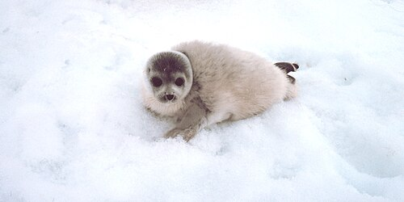
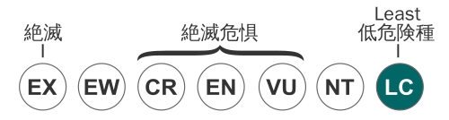

ゴマフアザラシとは
ゴマフアザラシ（胡麻斑海豹、学名：Phoca largha）は、アザラシ科ゴマフアザラシ属に属する海棲哺乳類。アザラシとしては中型。日本の水族館や動物園で最も多く飼育されているアザラシである。
住んでいる場所
ベーリング海、オホーツク海を中心にチュクチ海、日本海、太平洋北部、ピョートル大帝湾、渤海・黄海に分布する。日本では北海道のオホーツク海沿岸、襟裳岬以東の太平洋側、石狩川河口以北の日本海側に分布する。
形態
体長はオスで170cm前後、メスで160cm前後。体重は70 - 130kgほどになる。 ゴマフアザラシを漢字で表すと「胡麻斑海豹」となる。この名からも分かる通り背面は灰色の地に黒いまだら模様が散らばっている。一方、腹面は薄灰色でまだら模様は少ない。体表の模様は個体差が著しく大きい。 性成熟年齢はオスで3 - 4歳、メスで3 - 5歳。繁殖は一夫一妻形式で4月に交尾する。約一年後の3 - 4月に流氷上で一子を出産。授乳期間は2-3週間。新生児は白色からややクリーム色をした産毛に包まれて生まれてくる。この白色の産毛は流氷上で出産するゴマフアザラシにとって保護色となる。なおこの産毛は出産後2 - 3週間で抜け落ち、新生児も親と同じ胡麻斑模様になる。
生態
冬から春にかけては流氷とともに移動・回遊するアザラシであるため、冬のオホーツク海沿岸でよく見られる。流氷上で出産や育児を行う。流氷が消滅し後退すると北上する個体が圧倒的に多いが、北海道東部の風蓮湖や野付半島などにとどまる個体もいる。平均寿命は30-35年とされているが、国内の水族館でも30歳を越えた個体が出産した例がある。国内の水族館で同じゴマフアザラシ属のゼニガタアザラシと交雑した記録がある。なお、新江ノ島水族館で飼育されていた雌のゴマフアザラシ「天洋1（てんよういち）」が日本国内における長寿記録を更新してきたが、老衰による敗血症で2023年5月17日に47歳で死亡した。 広食性で口に入るものなら何でも食べる。小型のタラ類、カレイ類、サンマ、ニシン、チカなどの魚類の他、イカやタコ、エビやカニなどの無脊椎動物も食べているらしく、飼育している個体にアジやサバ、キビナゴ、イカナゴ、ホッケなどを与える施設もある。

保全状態評価

The IUCN Red List of Threatened Species 2016 では LC と評価している。個体数は1970年代には全体で40万頭、うちベーリング海・チュクチ海に20万-25万頭、オホーツク海に17万頭が分布していたと推定されている。その後、日本や旧ソ連が狩猟を行っていたため減少した。しかし、日本では年1000頭ほど捕獲されていたが毛皮の価値が低下したために商業的捕獲は衰退した。ソ連も捕獲頭数制限を設けたために、現在では個体数は回復しているとされるが、正確な推定はされていない。北海道では本来は越冬のために冬季にゴマフアザラシが集まっていたが、近年は夏季でも居着く個体が増加している。そのため、漁業被害が深刻となっている。それにともない、北海道東部で行われている秋サケ定置網に迷入し溺死するゴマフアザラシもいる。
人間との関わり
1988年に発表された森下裕美原作の漫画『少年アシベ』に、ゴマフアザラシの赤ちゃん「ゴマちゃん」が登場。その後、1990年にOVA化を経て、1991年にテレビアニメ化され、更に2016年に再度テレビアニメ化された。一般にもゴマフアザラシが「ゴマちゃん」の愛称で親しまれるとともに、本種の知名度が高まるきっかけにもなった。 上越市立水族博物館で飼育されていた「ジョー」は2006年頃から「立つアザラシ」として評判になった。水深1・5メートルのプールでひれ足を底につけ、直立不動になる姿がテレビ番組などで紹介され親しまれた。高齢のためと目が悪いため、一番楽な姿勢をとっていたと推測される。ジョーは2011年1月に老衰で死亡した。推定年齢は33歳。北海道稚内市抜海港には、11月 - 4月まで多いときで1200頭を超えるゴマフアザラシが越冬のためにやってくる。抜海港にはライブカメラや双眼鏡を設置したアザラシ観測所があり、防波堤の消波ブロックの上に寝転がる姿や港内を泳ぐ姿を見ることができる。